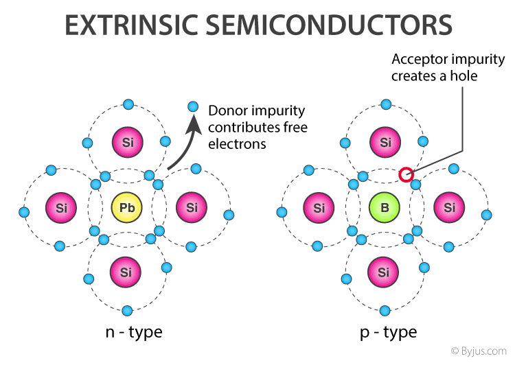

Extrinsic Semiconductor
- N-type semiconductor
- P-type semiconductor
EXTRINSIC SEMICONDUCTOR
*-N-Type semiconductor-*
N-Type semiconductor*-P-Type semiconductor-*
P-Type semiconductor| Intrinsic Semiconductor | Extrinsic Semiconductor |
|---|---|
| Pure semiconductor | Impure semiconductor |
| Density of electrons is equal to the density of holes | Density of electrons is not equal to the density of holes |
| Electrical conductivity is low | Electrical conductivity is high |
| Dependence on temperature only | Dependence on temperature as well as on the amount of impurity |
| No impurities | Trivalent impurity, pentavalent impurity |